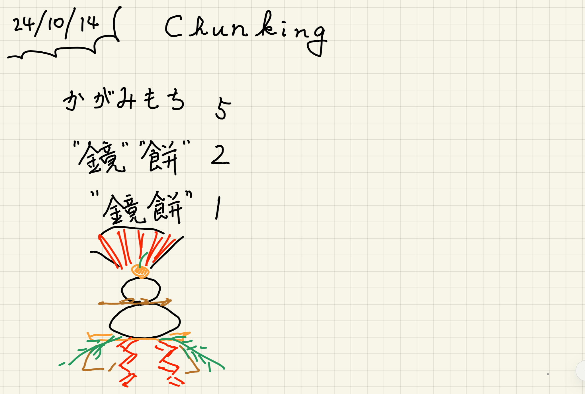
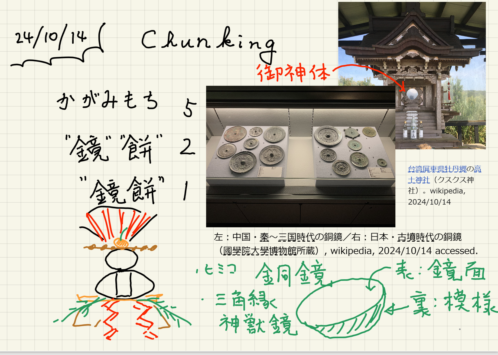

Chunking
Table of Contents
Mac OS X-10.15.7 ruby-2.7.1p83
1 既知感
ロバート A.バートンの著書「確信する脳「知っている」とはどういうことか」 [^feelingofknowing]というのにある，**知る瞬間**を体験してもらいましょう．
「既知感」についての考察を始めるにあたって，次の段落を普通の速さでお読みいただきたい．飛ばし読みをしたり，途中で止めたりしないこと．この体験は，一度説明を知ってしまうと繰り返すことができないため，読み終えたら少し時間をとって，自分でどう感じたかを自問しよう．そして説明の言葉を聞いた後，もう一度段落を読み直す．その際，自分の心の状態と，この段落についての感じがどう変わったかに注意を向けてほしい．
新聞は雑誌よりよい．海岸は道路よりよい場所である．最初は歩くよりも走るほうがよい．何度か試みる必要があるかもしれない．ある程度の技術はいるが，学ぶのは簡単だ．小さな子どもでも楽しめる．一度うまくいったら，障害はほとんどない．鳥が近づきすぎることはめったにない．しかしすぐに雨に濡れる．同じことをする人が多すぎると問題が起こることがある．かなり余裕が必要である．障害がなければ，非常にのどかである．岩はいかりの代わりになる．しかし，いったん切り離されてしまうと，二度目のチャンスはない．
ご理解いただけただろうか．それとも意味のない文章だと思われただろうか．可能性のある説明を心が探っているのを感じておこう．さて，次の言葉を聞いたとき，何が起こるかを見てみよう．
<details><summary>謎の単語</summary>""</details>
ここで前の段落を読み直して，最初に感じた何かが欠けているという不快感が，正しいという快感に変わるのを感じてほしい．すべてがぴたりとはまり，一文一文がきちんと意味を持つ．もう一度読み直してみよう．もう，理解できないという感覚を取り戻すことはできない．一瞬のうちに，しかるべき意識的な施策をすることもなく，文章は不可逆的に＜既知感＞に満たされる．
2 チャンキング
|  |
次にチャンクについての記述を読んでみてください．
心理学者ミラーの提唱した概念で、人間が情報を知覚する際の「情報のまとまり」のこと。また、その単位。たとえば、「かがみもち」を、平仮名5文字として知覚すると5チャンク、「鏡」と「餅」として理解すると2チャンク、「鏡餅」のこととして理解すると1チャンクとなる。ミラーによれば、人間が一度に覚えられるチャンクの数には限界があり、7±2チャンクとされる（この値をマジカルナンバーという）。ただし、複数のチャンクをグループにし、より大きな1つのチャンクにまとめることで、知覚・記憶する情報量を増やすことができる（これをチャンキングと呼ぶ）。複雑な内容をわかりやすく伝達するためには、情報を減らしたりまとめたりして、チャンクの数を7〜5以下に抑えることが効果的である。
[コトバンク](http://kotobank.jp/word)で「チャンク」を検索[^chunk].
いかがでしょう．ところで「鏡餅」って知ってますよね？ なら，なんであれを鏡餅というかご存知でしょうか？
|  |
| 鏡餅の由来. |
このように言葉は，単なる意味だけでなく， 関連情報，由来なんかをまとめて概念として記憶することをあらかじめ意図されています． それらをバルク(塊)にして覚えると忘れにくいということが知られています． 単に単語を丸暗記するだけでなく，身近な単語と関連づけるとより覚えやすくなります．
3 Hash
4 絶対参照と相対参照(absolute and relative references)
5 参照文献
[^feelingofknowing]: 確信する脳「知っている」とはどういうことか，ロバート A.バートン，(河出書房新社,2010).
[^chunk]: [コトバンク](http://kotobank.jp/word)で「チャンク」を検索, (2020/06/22 accessed).